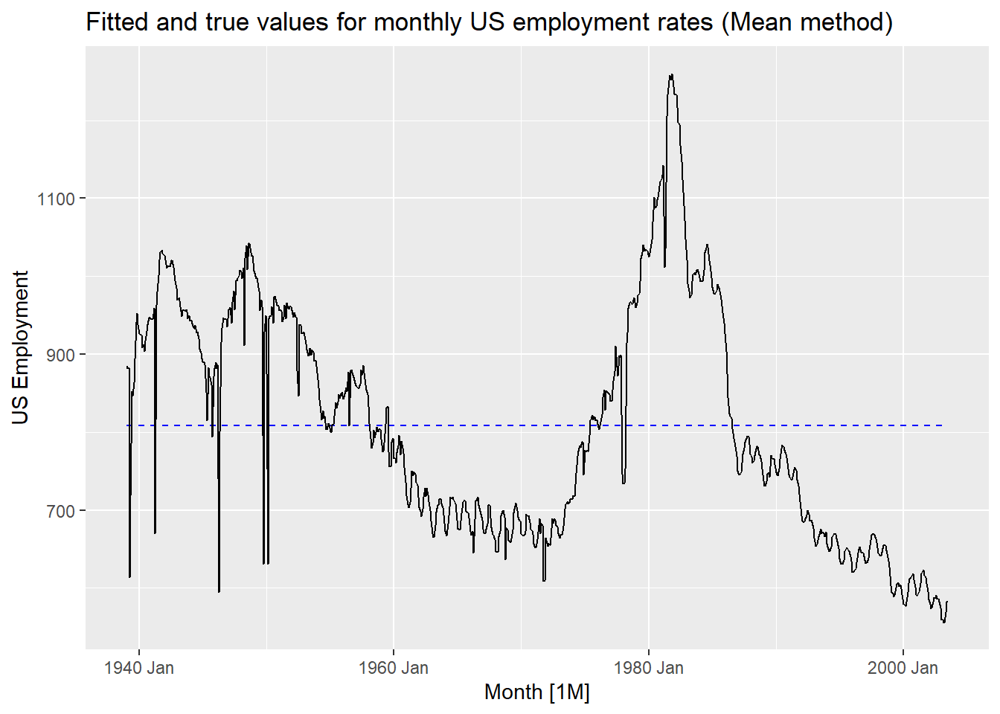
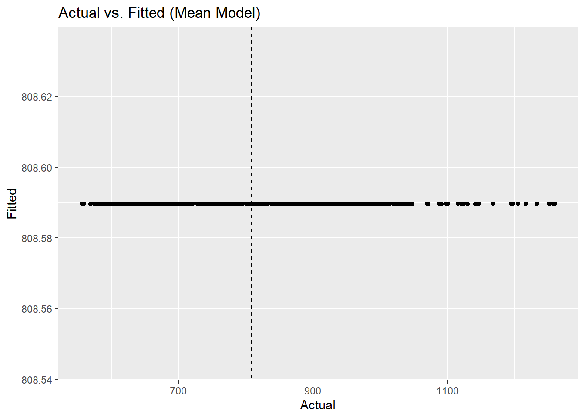
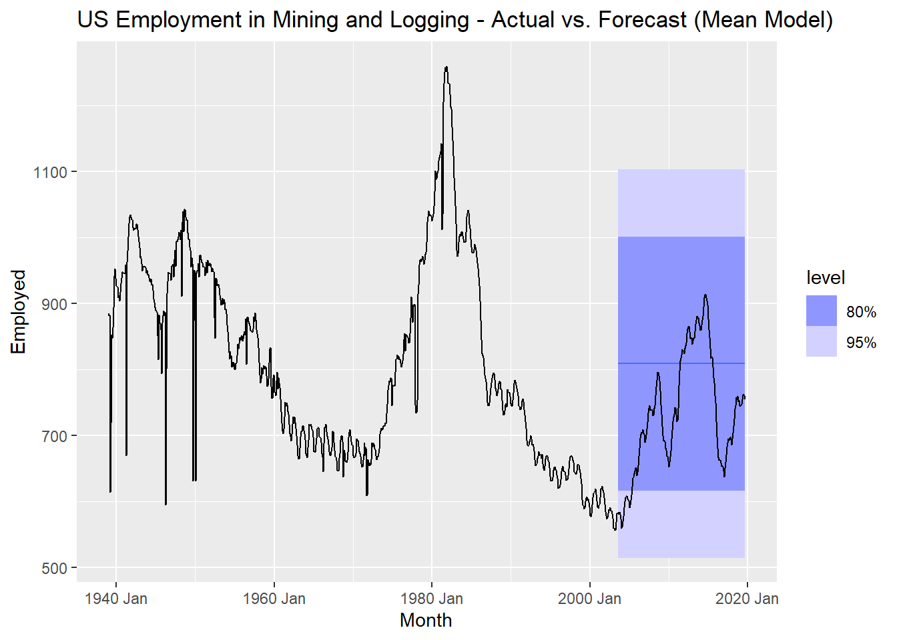
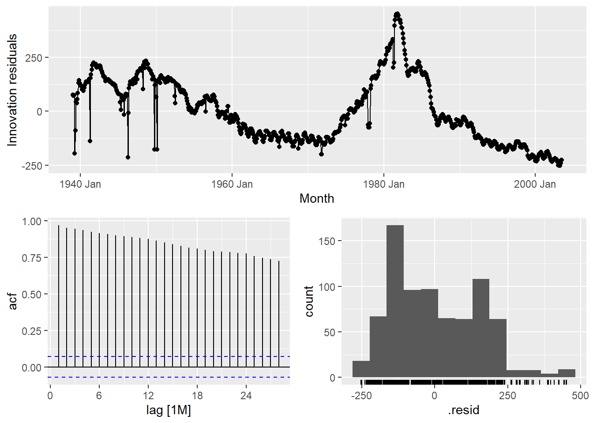

# Install needed libraries to use this report
if (!require(dplyr)) install.packages("dplyr")
if (!require(tidyr)) install.packages("tidyr")
if (!require(ggplot2)) install.packages("ggplot2")
if (!require(fpp3)) install.packages("fpp3")
#Load needed libraries
library(dplyr)
library(ggplot2)
library(tidyr)
library(fpp3)
# Read already filtered time series (tsibble)
# with Series ID CEU1000000001 (Mining and Logging)
mySeries <- readRDS("us_employment_filtered.rds")TSAR Project Assignment Part 3 - Group 3
Times Series Forecasting
Preliminaries
Overview of tsibble
head(mySeries)# A tsibble: 6 x 4 [1M]
# Key: Series_ID [1]
Month Series_ID Title Employed
<mth> <chr> <chr> <dbl>
1 1939 Jan CEU1000000001 Mining and Logging 885
2 1939 Feb CEU1000000001 Mining and Logging 882
3 1939 Mär CEU1000000001 Mining and Logging 883
4 1939 Apr CEU1000000001 Mining and Logging 614
5 1939 Mai CEU1000000001 Mining and Logging 719
6 1939 Jun CEU1000000001 Mining and Logging 852str(mySeries)tbl_ts [969 × 4] (S3: tbl_ts/tbl_df/tbl/data.frame)
$ Month : mth [1:969] 1939 Jan, 1939 Feb, 1939 Mär, 1939 Apr, 1939 Mai, 1939 Jun...
$ Series_ID: chr [1:969] "CEU1000000001" "CEU1000000001" "CEU1000000001" "CEU1000000001" ...
$ Title : chr [1:969] "Mining and Logging" "Mining and Logging" "Mining and Logging" "Mining and Logging" ...
$ Employed : num [1:969] 885 882 883 614 719 852 847 864 894 941 ...
- attr(*, "key")= tibble [1 × 2] (S3: tbl_df/tbl/data.frame)
..$ Series_ID: chr "CEU1000000001"
..$ .rows : list<int> [1:1]
.. ..$ : int [1:969] 1 2 3 4 5 6 7 8 9 10 ...
.. ..@ ptype: int(0)
..- attr(*, ".drop")= logi TRUE
- attr(*, "index")= chr "Month"
..- attr(*, "ordered")= logi TRUE
- attr(*, "index2")= chr "Month"
- attr(*, "interval")= interval [1:1] 1M
..@ .regular: logi TRUEsummary(mySeries) Month Series_ID Title Employed
Min. :1939 Jan Length:969 Length:969 Min. : 556.0
1st Qu.:1959 Mär Class :character Class :character 1st Qu.: 676.0
Median :1979 Mai Mode :character Mode :character Median : 765.0
Mean :1979 Mai Mean : 793.8
3rd Qu.:1999 Jul 3rd Qu.: 899.0
Max. :2019 Sep Max. :1260.0 Model 1: Mean Method
Step 1: Extracting the Training Set
# Extracting number of rows for training set with 80/20 split
overall_count <- (nrow(mySeries))
training_row_count <- floor((nrow(mySeries) * 0.8))
train <- mySeries %>% slice(1:training_row_count)Step 2: Train 1st Benchmark Model
# Mean method used
mean_employment_fit <- train %>%
model(
Mean = MEAN(Employed)
)
# View first impression of the fitted values
augment(mean_employment_fit)# A tsibble: 775 x 7 [1M]
# Key: Series_ID, .model [1]
Series_ID .model Month Employed .fitted .resid .innov
<chr> <chr> <mth> <dbl> <dbl> <dbl> <dbl>
1 CEU1000000001 Mean 1939 Jan 885 809. 76.4 76.4
2 CEU1000000001 Mean 1939 Feb 882 809. 73.4 73.4
3 CEU1000000001 Mean 1939 Mär 883 809. 74.4 74.4
4 CEU1000000001 Mean 1939 Apr 614 809. -195. -195.
5 CEU1000000001 Mean 1939 Mai 719 809. -89.6 -89.6
6 CEU1000000001 Mean 1939 Jun 852 809. 43.4 43.4
7 CEU1000000001 Mean 1939 Jul 847 809. 38.4 38.4
8 CEU1000000001 Mean 1939 Aug 864 809. 55.4 55.4
9 CEU1000000001 Mean 1939 Sep 894 809. 85.4 85.4
10 CEU1000000001 Mean 1939 Okt 941 809. 132. 132.
# ℹ 765 more rowsStep 3: Evaluate the Model Fit of 1st Benchmark Model
Task A
augment(mean_employment_fit) %>%
autoplot(.fitted, colour="blue", linetype="dashed") +
autolayer(train, Employed) +
labs(y= "US Employment", title="Fitted and true values for monthly US employment rates (Mean method)")
Answering questions to 1st Benchmark Model
Are the fitted values close to the actual values?
Are they systematically too high or too low?
If yes, where does it come from? (Consider how your benchmark model works!)
Task B
augment(mean_employment_fit) %>%
ggplot(aes(x=Employed, y=.fitted)) +
geom_point() +
geom_abline(slope = 1, intercept = 0, linetype=2) +
labs(title = "Actual vs. Fitted (Mean Model)", x="Actual", y="Fitted")
Answering questions to 1st Benchmark Model
Are the points close to the identity line?
Are they systematically too high or too low?
If yes, where does it come from? (Relate your answer to what you saw in the time plot.)
Task C
mean_employment_fit %>% gg_tsresiduals()
Answering questions to 1st Benchmark Model
Are the residuals auto-correlated? How do you decide that based on the plots?
Do the residuals have zero mean? How do you decide that based on the plots?
What do these results tell you about your model?
Task D
augment(mean_employment_fit) %>%
features(.innov, box_pierce, lag=24)# A tibble: 1 × 4
Series_ID .model bp_stat bp_pvalue
<chr> <chr> <dbl> <dbl>
1 CEU1000000001 Mean 13935. 0Answering questions to 1st Benchmark Model
Does the test result support your conclusions from (c)?
How do you conclude that from the test result?
# Calculate the mean of the residuals of the fitted model
residual_mean <- mean(
augment(mean_employment_fit)$.resid,
na.rm = TRUE)
residual_mean[1] -3.226362e-14Does the result support your conclusions from (c)?
Step 4: Evaluate the Point Forecast Accuracy of your 1st Benchmark Model
# Make a forecast and save the result
fc_mean <- mean_employment_fit %>%
forecast(h = (nrow(mySeries) - nrow(train)))
# Create a time plot 'Actual vs. Forecast'
fc_mean %>%
autoplot(mySeries) +
labs(title="US Employment in Mining and Logging - Actual vs. Forecast (Mean Model)")
# Calculate the forecast accuracy metrics
fc_mean %>%
accuracy(mySeries)# A tibble: 1 × 11
.model Series_ID .type ME RMSE MAE MPE MAPE MASE RMSSE ACF1
<chr> <chr> <chr> <dbl> <dbl> <dbl> <dbl> <dbl> <dbl> <dbl> <dbl>
1 Mean CEU1000000001 Test -74.0 116. 98.8 -11.7 14.6 2.27 1.70 0.987Answering questions to 1st Benchmark Model
Interpret the RMSE (Root Mean Squared Error) in max. 3 sentences:
Interpret the MAPE (Mean Absolute Percentage Error) in max. 3 sentences:
Step 5: Evaluate the Point Forecast Uncertainty of Your 1st Benchmark Model
# Residual diagnostics for checking homoscedasticity and normality
mean_employment_fit %>% gg_tsresiduals()
# Display prediction interval boundaries
fc_mean %>%
hilo()# A tsibble: 194 x 7 [1M]
# Key: Series_ID, .model [1]
Series_ID .model Month
<chr> <chr> <mth>
1 CEU1000000001 Mean 2003 Aug
2 CEU1000000001 Mean 2003 Sep
3 CEU1000000001 Mean 2003 Okt
4 CEU1000000001 Mean 2003 Nov
5 CEU1000000001 Mean 2003 Dez
6 CEU1000000001 Mean 2004 Jan
7 CEU1000000001 Mean 2004 Feb
8 CEU1000000001 Mean 2004 Mär
9 CEU1000000001 Mean 2004 Apr
10 CEU1000000001 Mean 2004 Mai
# ℹ 184 more rows
# ℹ 4 more variables: Employed <dist>, .mean <dbl>, `80%` <hilo>, `95%` <hilo>Answering questions to 1st Benchmark Model
Are the residuals homoscedastic? (That is, do they have constant variance?)
Are the residuals normally distributed?
Does it make sense to include these prediction intervals in your model evaluation? Why/why not?